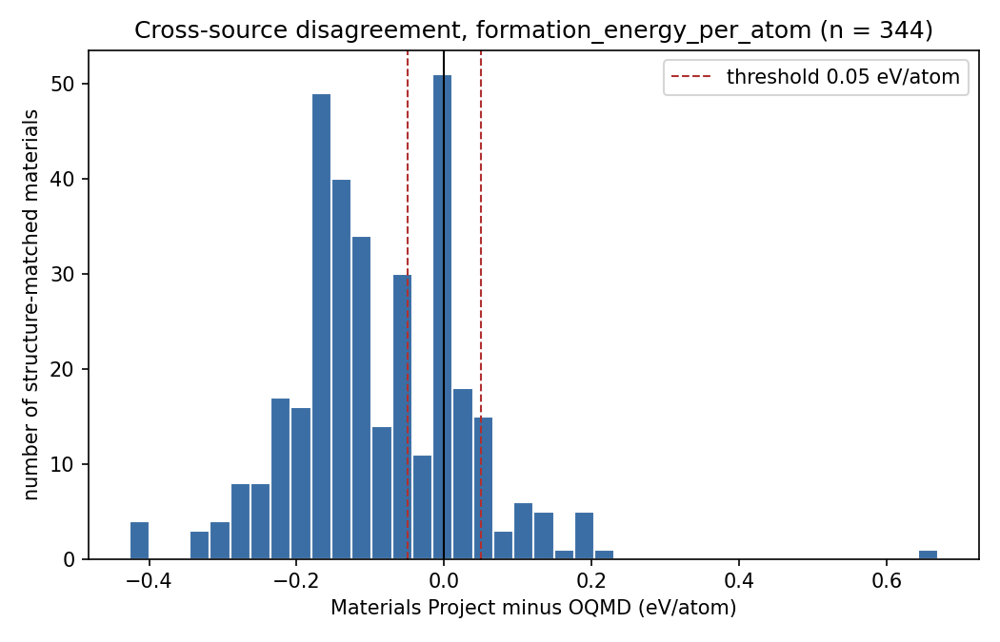
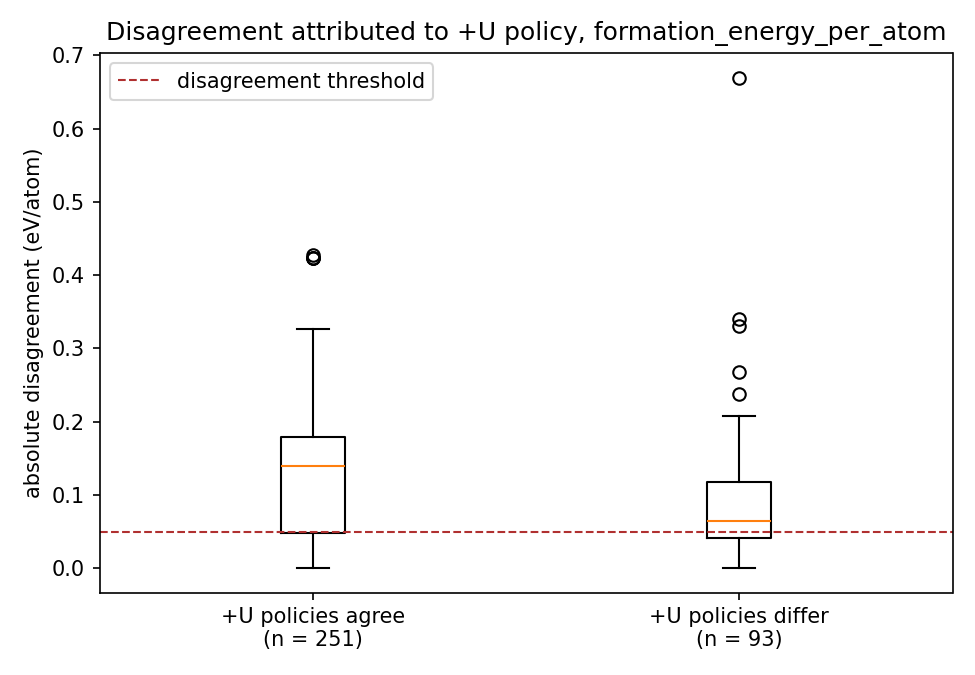
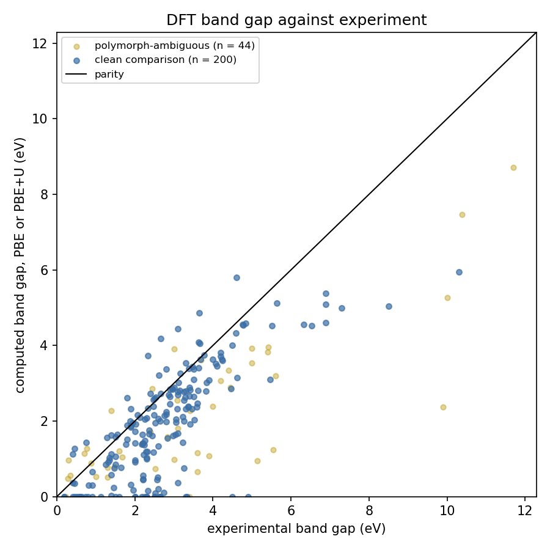
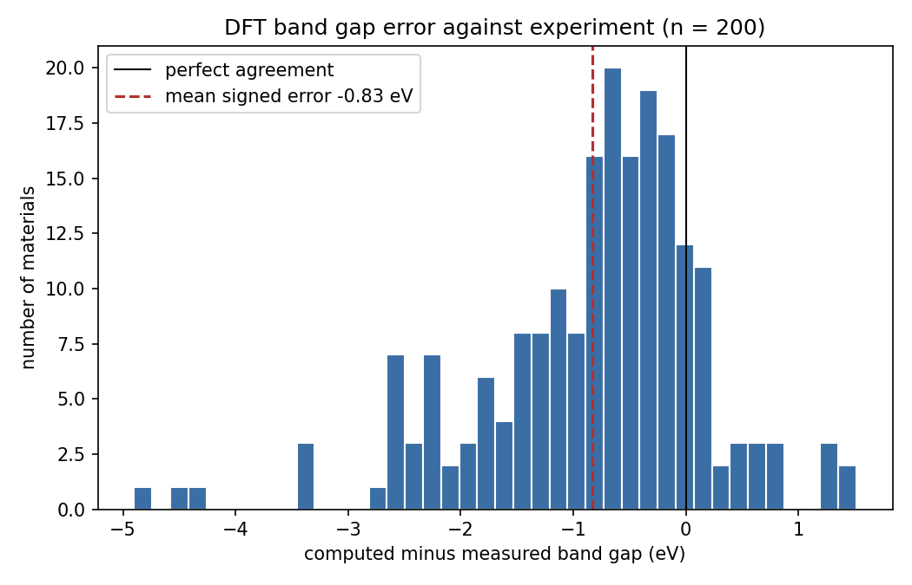

Coverage
287
compositions assayed. Materials Project returned 284, OQMD 223, both 222. Two were in neither. Nothing was filled in.
Assay no. MTB-2026-08-16 · Ibtisam Ahmed Khan
Materials data trust benchmark
Two public databases of computed materials properties were asked the same question about the same crystals. They agreed within the usual 50 meV/atom window for formation energy in 90 of 344 fair comparisons. The rest is not noise. It is different recipes, different corrections, and in some cases a different crystal hiding under the same formula.
287
compositions assayed. Materials Project returned 284, OQMD 223, both 222. Two were in neither. Nothing was filled in.
0.119
eV/atom mean absolute difference, against a 0.05 eV/atom agreement threshold. Disagreement is larger where the +U policies agree.
−0.83
eV mean signed error on 200 clean comparisons. PBE is low in 84.5% of those cases. A computed 0.0 eV is not a metal.
0
of 688 cross-source comparisons. 289 agreed closely enough on spread. Every one is capped because OQMD publishes no per-entry functional.
These are the 287 compositions from the run. Search a formula. The stamp is the confidence band for the closest structure-matched formation energy pair, when both databases reported one.
selected assay
To re-run this composition locally: mtb audit Fe2O3
Generated from the same run as the numbers above. Not illustrations.




mtb audit TiO2.